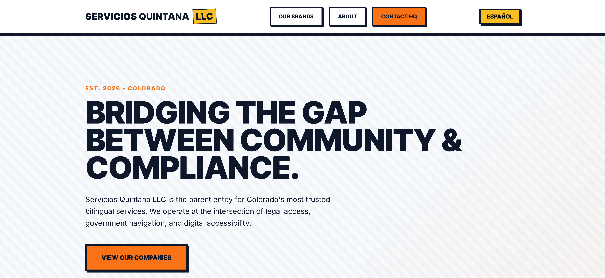

Servicios Quintana LLC Platform
Corporate Infrastructure & Multi‑Brand Strategy
A high‑performance parent‑company portal unifying multiple service brands under one authoritative digital identity.
Technical Achievement:
Engineered a Neo‑Brutalist Latino Tech design system with a centralized, lightweight i18n framework powered by a single translations object. Built with modular IIFE architecture, a custom Scroll Reveal engine, a high‑contrast cursor system, and Reduced Motion logic to maintain WCAG 2.1 AA compliance.
Impact:
Created a professional "Corporate HQ" that bridges community‑focused services with legal compliance. Centralized three brands — Quintana Notary, Ayuda DMV, and David Quintana Dev — into a unified hub with clear hierarchy and hard‑shadow visual structure.
Stack:
Vanilla JavaScript (ES6+, IIFE Modules), Semantic HTML5, CSS3 (Custom Variables, Flexbox, Grid), FontAwesome, Google Fonts.Plataforma Servicios Quintana LLC
Infraestructura Corporativa y Estrategia Multi‑Marca
Un portal de empresa matriz de alto rendimiento que unifica múltiples marcas de servicios bajo una identidad digital autorizada.
Logro Técnico:
Diseñé un sistema de diseño Neo‑Brutalista Latino Tech con un marco i18n ligero centralizado alimentado por un único objeto de traducciones. Construido con arquitectura IIFE modular, un motor Scroll Reveal personalizado, un sistema de cursor de alto contraste y lógica Reduced Motion para mantener el cumplimiento de WCAG 2.1 AA.
Impacto:
Creé una "Sede Corporativa" profesional que conecta servicios enfocados en la comunidad con el cumplimiento legal. Centralicé tres marcas — Quintana Notary, Ayuda DMV y David Quintana Dev — en un centro unificado con jerarquía clara y estructura visual de sombras duras.
Stack:
Vanilla JavaScript (ES6+, Módulos IIFE), HTML5 Semántico, CSS3 (Variables Personalizadas, Flexbox, Grid), FontAwesome, Google Fonts.